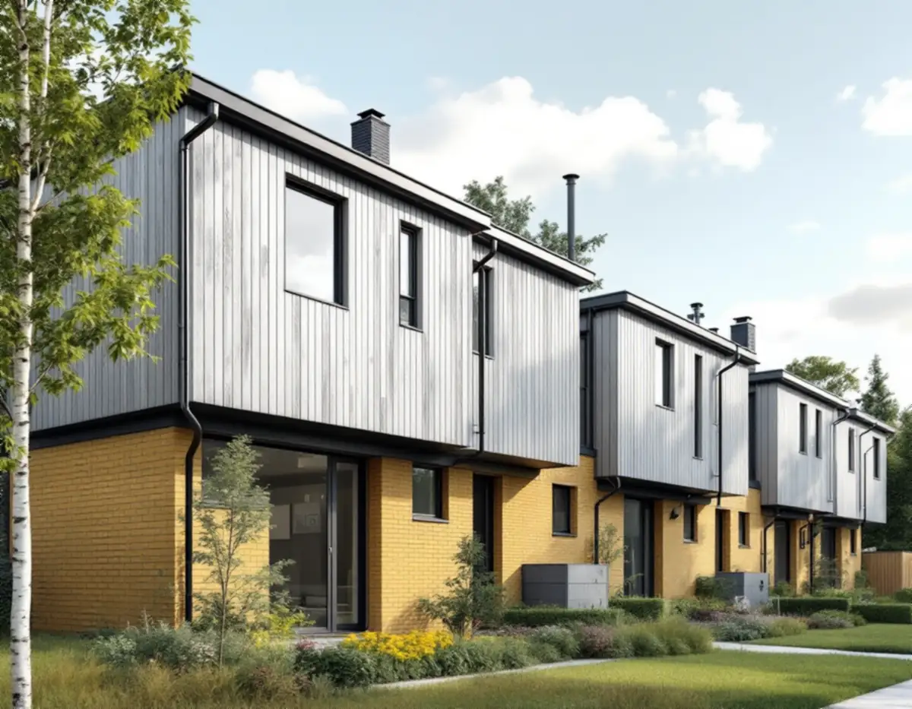
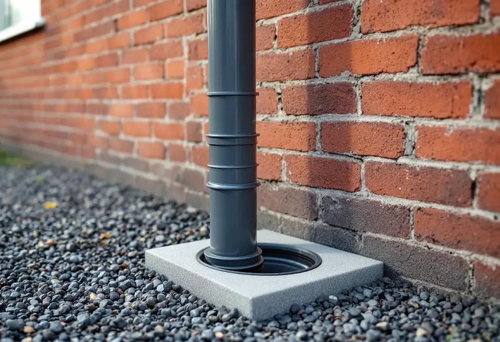
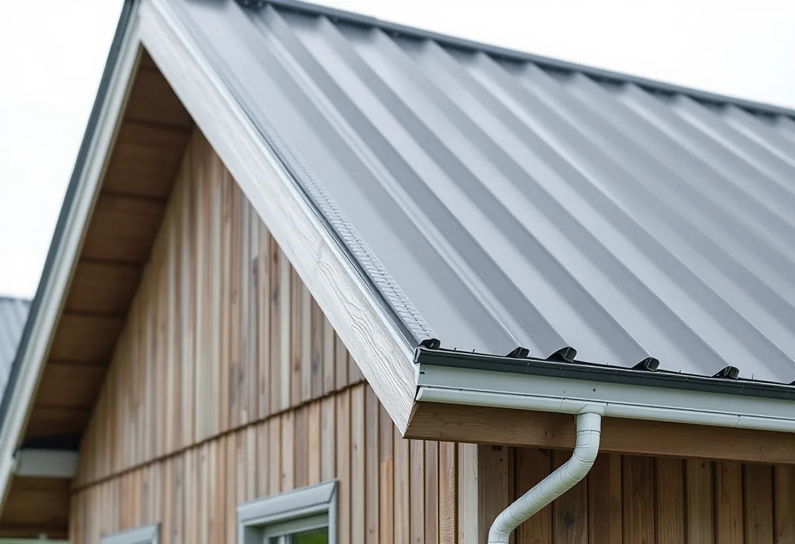

Platsbesök
Gratis genomgång av tak, rännor och stuprör.
Radhusen i Sätra, Bredäng, Vårberg och Skärholmen är ofta byggda i sluttningar, med en souterrängvåning mot ena sidan. Där är det extra viktigt att regnvattnet från taket hamnar rätt. Geal Entreprenad AB byter hängrännor, stuprör och plåtbeslag på småhus i Skärholmens stadsdelsområde.

Stadens vägledning Varsam utveckling av småhus- och villaområden beskriver de gruppbyggda småhusen i de storskaliga stadsdelarna, där Bredäng, Sätra, Skärholmen och Vårberg ingår. Nivåskillnaderna tas ofta upp med en souterrängvåning, tomterna är små och husgrupperna har mycket enhetlig utformning. Taken är huvudsakligen platta eller pulpettak, men sadeltak med brant takfall förekommer också.
Färgsättningen var enligt vägledningen noga komponerad och enhetlig inom husgrupperna. Det gäller också plåten: rännor, stuprör och vindskivebeslag i samma kulör håller ihop längan. Vi tar med en kulörkarta till platsbesöket och jämför med grannhusen innan något beställs. Vägledningen nämner också att mindre tillbyggnader, som inglasade uterum, är vanliga i områdena. Där taket på ett uterum möter husväggen behövs ett plåtbeslag som leder bort vattnet, och det kontrollerar vi samtidigt.

Stadens områdesfakta för 2025 visar att nästan alla småhus i stadsdelsområdet ägs med äganderätt: 577 i Vårberg, 543 i Skärholmen, 536 i Sätra och 320 i Bredäng. Det betyder att det oftast är du som husägare som beställer plåtarbetet och som får rotavdrag för det. Vägledningen påpekar att de små tomterna begränsar större förändringar av de enskilda husen, så arbetet handlar oftast om att byta och förbättra det som finns.
När husen sitter ihop kan grannarna dela ränna eller stuprör vid gaveln. Då samordnar vi med grannen så att skarven blir tät och vattnet leds rätt. Vill flera grannar byta samtidigt kan vi göra hela längan i ett svep, och varje ägare får sitt eget kostnadsförslag.
Stockholm Vatten och Avfall skriver att en backventil installeras på servisledningen för att hindra avloppsvatten från gatan att tränga in i källaren genom golvbrunnar. Innan en backventil sätts in måste du säkerställa att du inte har några egna dagvattenanslutningar på samma ledning. Är ventilen stängd kan dagvattnet annars inte ta sig ut, utan blir kvar på fastigheten. Bolaget skriver också att en backventil kräver regelbunden tillsyn och skötsel, och att avloppsvattnet inte kan spolas ut från huset medan den är stängd.
För ett hus med souterrängvåning betyder det att det spelar roll vart stuprören leder vattnet. Vi tar reda på om dina stuprör är anslutna till ledningen eller släpper ut vattnet på marken innan vi byter dem, och berättar vad det betyder om du funderar på en backventil.
Ett platt eller svagt lutande tak avvattnas annorlunda än ett brant sadeltak, och plåtdetaljerna vid takfot och vindskivor är det som håller vattnet borta från väggen. Vi kontrollerar beslagen, byter skadad plåt och ser till att fallet i rännorna stämmer.
Boverket skriver att du inte behöver bygglov för att byta taktäckningsmaterial på ett småhus, men att du ska kontrollera att taket klarar den nya belastningen och att ändringen ska anpassas till omgivningen. I Bredäng, som stadens vägledning markerar som kulturhistoriskt värdefull miljö, kontrollerar vi kartan först. Mer om tjänsten finns under plåtslagare.

Gratis genomgång av tak, rännor och stuprör.
Vart leder stuprören vattnet i dag?
Samma färg som husgruppen.
Ställning mot den höga sidan vid behov.
Rännor, stuprör, beslag och bleck.
Vattenprov och genomgång med dig.
Skatteverket räknar det som rotarbete att reparera, rengöra eller byta ut plåttak, hängrännor och stuprör på ett småhus du äger, och att montera och montera ner ställning i samband med arbetet. Är huset yngre än fem år får arbetet bara återställa det ursprungliga skicket.
Avdraget är högst 30 procent av arbetskostnaden och högst 50 000 kronor per person och år. Plåt och annat material ger inget avdrag, och Geal drar avdraget direkt på fakturan.
Antal meter ränna och stuprör, husets höjd mot souterrängsidan, ställning, beslag och bleck, och om grannar i längan byter samtidigt. Efter ett gratis platsbesök får du ett skriftligt kostnadsförslag.
Plåttak, hängrännor och beslag.
Plåtslagare i Stockholm →Takbyte, takbesiktning och plåtarbeten.
Takläggare i Skärholmen →Radhus i grupper i Bredäng, Sätra och Vårberg.
Takrenovering i Skärholmen →Radhustomterna och grannarna.
Attefallshus i Skärholmen →Radhusen, källarplanet och golvbrunnen.
Badrumsrenovering i Skärholmen →Radhusen från 60- och 70-tal.
Fasadmålning i Skärholmen →Radhus i sammanhållna husgrupper.
Fönsterbyte i Skärholmen →Miljonprogrammets radhus.
Fönsterrenovering i Skärholmen →Parkett och lamellgolv från 1960-talet.
Golvslipning i Skärholmen →1960-talskök, bostadsrätt och radhus.
Köksrenovering i Skärholmen →Lägenheter, trapphus och radhus.
Målare i Skärholmen →Altan, plank och förråd vid radhuset.
Snickare i Skärholmen →Egna radhus i Sätra, Bredäng och Vårberg.
Takbyte i Skärholmen →Ny tapet i hyresrätt och bostadsrätt.
Tapetsering i Skärholmen →Radhusen, uterum och skärmtak.
Tillbyggnad i Skärholmen →